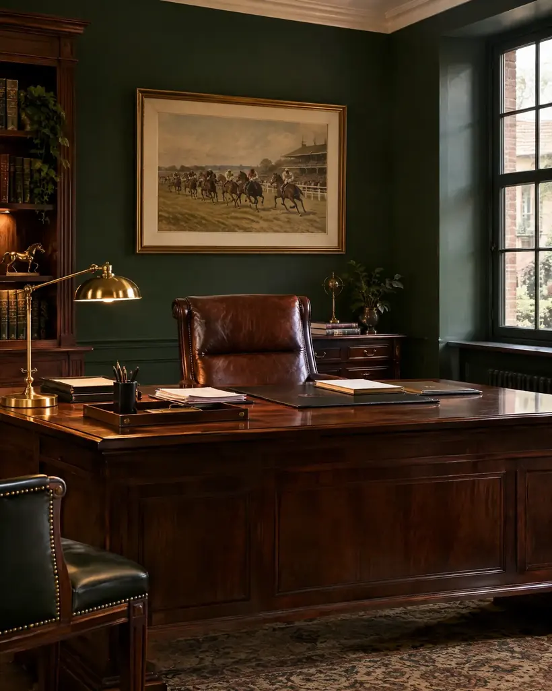
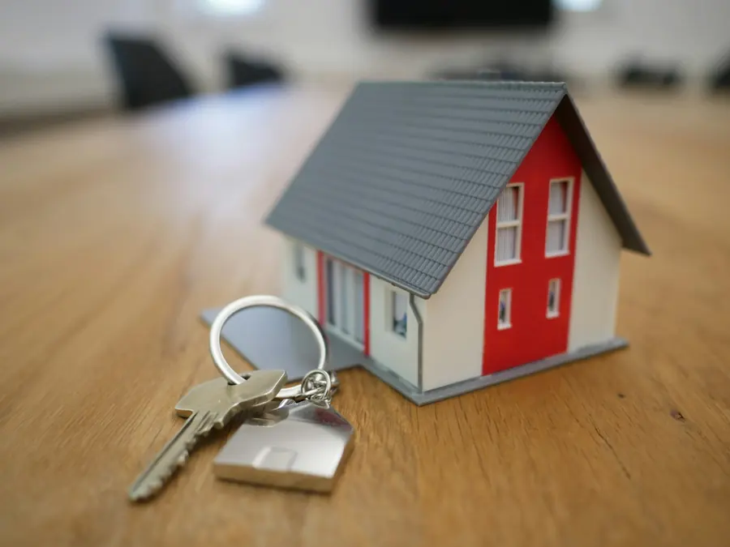

Sociaal recht
Sociaal rechtWerk en ontslag
Ontslag, opzeggingstermijnen, arbeidsovereenkomsten en conflicten tussen werkgever en werknemer.
Vraag hierover een afspraak →Aan de Vestingstraat helpen Anton en Maurits Roobaert mensen uit Halle en omgeving. Na een ontslag, een ongeval of een discussie met de verzekering. Bij een scheiding, een burenruzie of een aannemer die niet levert.

Bel even, dan wordt er tijd voor u vrijgemaakt aan de Vestingstraat.
02 361 74 45Kies wat het dichtst bij uw vraag komt. U ziet meteen om welk rechtsdomein het gaat en wie van het kantoor er dagelijks mee bezig is.
Eén keuze is genoeg. In het gesprek komt de rest.
Een ontslag dat niet klopt, een opzegtermijn die te kort is of een conflict met uw werkgever. Ook voor werkgevers met een vraag over een werknemer.
De domeinen die Anton en Maurits Roobaert zelf opgeven bij de Orde van Vlaamse Balies. Twijfelt u of uw vraag erbij hoort, bel gerust.
Sociaal rechtOntslag, opzeggingstermijnen, arbeidsovereenkomsten en conflicten tussen werkgever en werknemer.
Vraag hierover een afspraak → Verkeer
VerkeerNa een aanrijding of een overtreding. Uw schade, uw verzekering en uw zaak voor de politierechter.
Vraag hierover een afspraak →Wie draait op voor de schade, en wat moet uw verzekeraar betalen. Burgerlijke aansprakelijkheid in gewone taal.
Vraag hierover een afspraak → Familierecht
FamilierechtUit elkaar gaan, afspraken over de kinderen en het onderhoudsgeld, en andere vragen binnen de familie.
Vraag hierover een afspraak →
GoederenrechtErfdienstbaarheden, grenzen, mede-eigendom en wat er mag op uw grond of die van de buren.
Vraag hierover een afspraak → Aanneming en handel
Aanneming en handelEen aannemer die niet levert, gebreken na de oplevering, en geschillen met klanten of leveranciers van uw zaak.
Vraag hierover een afspraak →De rechtsdomeinen worden door de advocaat zelf aangeduid en niet door de Orde nagekeken.

Geen groot kantoor met een secretariaat dat u doorschakelt. Bij Roobaert spreekt u met de advocaat die uw dossier opvolgt, in het Nederlands, in Halle.
U hoeft niet te weten welk artikel van welke wet op u van toepassing is. U vertelt, de advocaat zoekt uit wat het betekent.

Wie in Halle woont, hoeft voor een advocaat niet naar Brussel. U maakt een afspraak, komt langs aan de Vestingstraat 8 en spreekt met de advocaat die uw dossier opvolgt.

Ja, het kantoor werkt op afspraak. Bel tijdens de kantooruren of stuur een mail, dan wordt een moment voor u vrijgehouden.
Ja, u kiest zelf uw advocaat. Breng uw polis mee naar het eerste gesprek, dan wordt nagekeken wat gedekt is.
Dat bespreekt u bij het eerste gesprek, voor er werk gebeurt. Zo weet u van bij het begin waar u aan toe bent.
Ja. Beide advocaten zijn ingeschreven aan de Nederlandse Orde van de balie van Brussel.
Bel gerust even. Op een paar minuten weet u of het kantoor u kan helpen.
Bel, mail of laat hier kort uw vraag na. Wat u schrijft, blijft vertrouwelijk.
| Maandag | 9 tot 17 uur |
| Dinsdag | 9 tot 17 uur |
| Woensdag | 9 tot 17 uur |
| Donderdag | 9 tot 17 uur |
| Vrijdag | 9 tot 17 uur |
| Zaterdag | gesloten |
| Zondag | gesloten |
Ik maakte deze demo voor u om te tonen wat er kan. Na een kort gesprek maak ik er iets veel persoonlijkers van, helemaal naar uw wens.
Vrijblijvend. Ik kom langs of we bellen.
Op maat, op uw eigen domein.
Geen voorschot. U betaalt pas als alles klaar is.
Hosting, domeinnaam en kleine wijzigingen, zoals nieuwe openingsuren.
Omdat een voorbeeld meer zegt dan een mail. Zo ziet u meteen wat er kan, en het kost u niets.
Nee. Het gesprek is vrijblijvend. Vindt u het niks, dan is het daarmee gedaan.
Na ons gesprek staat uw site binnen 10 tot 14 dagen online.
Zeker. Uw domeinnaam kan gewoon blijven, de nieuwe site komt in de plaats van de oude.
Nee, dat doe ik op basis van ons gesprek. Eigen foto's zijn mooi meegenomen, maar niet nodig om te starten.